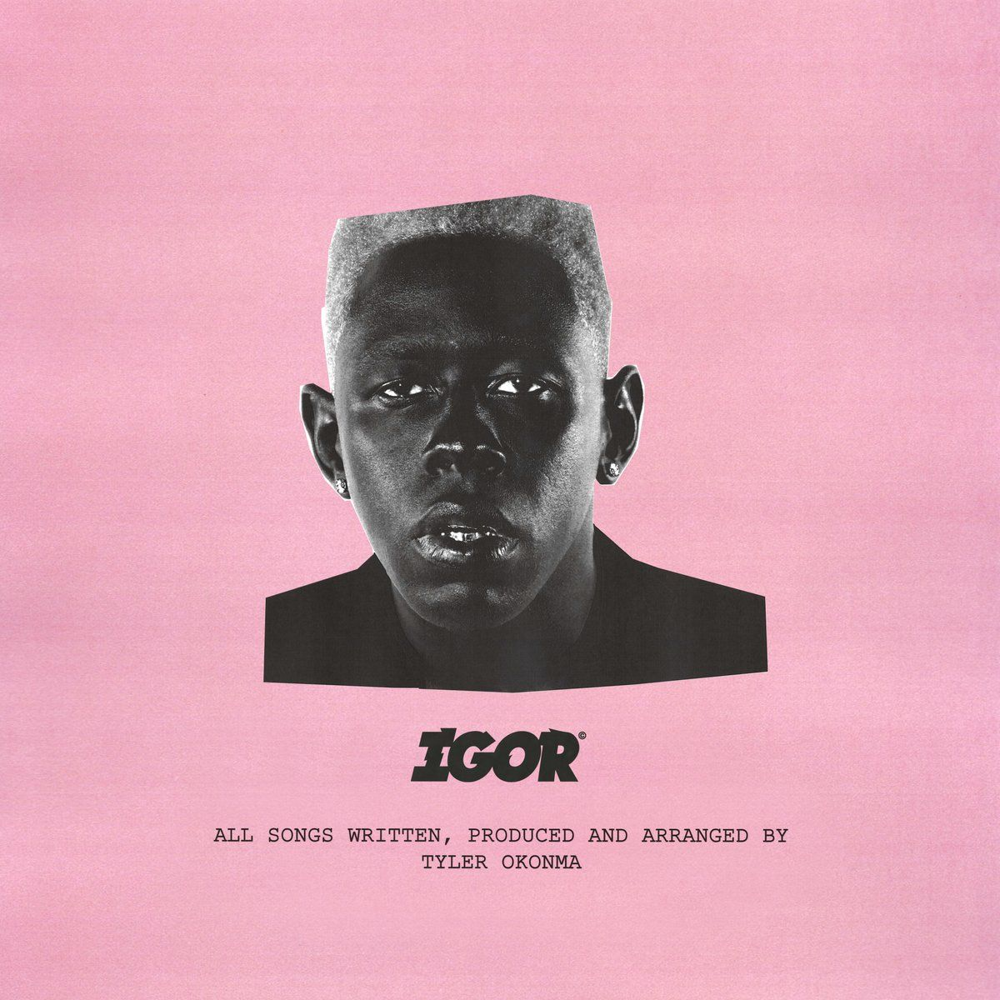
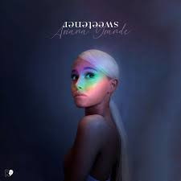
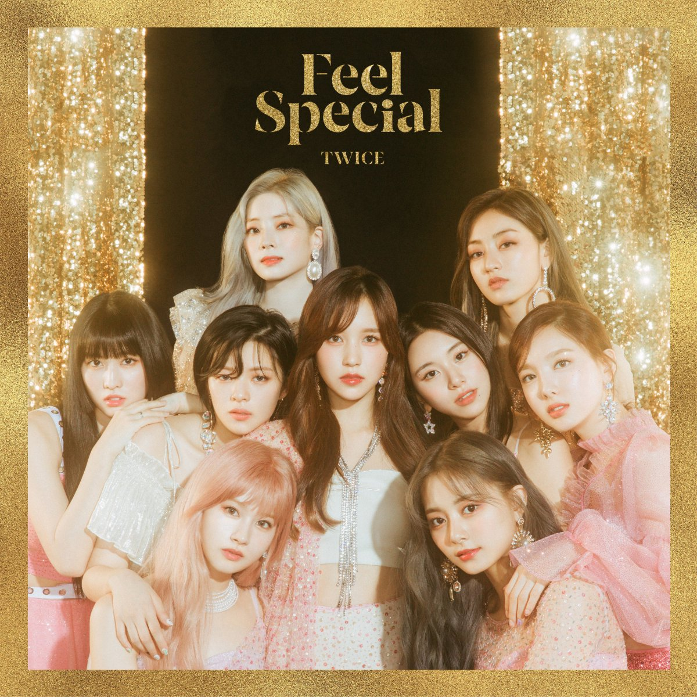
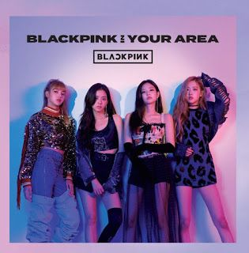

Harry Styles
Fine Line
2 Tracks
Fine Line is the debut digital single released by Jennie. The song is an anthemic dance track rife with EDM synths and beat drops, boisterous, hip-hop-slanting percussion, and squealing whistle effects. The single and its music video were released on November 12, 2018.
2120
141

Frank Ocean
blond
2 Tracks
"Old Town Road" is a song by the American rapper Lil Nas X, first released independently in December 2018. After gaining popularity, the single was re-released by Columbia Records in March 2019. Lil Nas X also recorded a remix with the American country singer Billy Ray Cyrus, which was released on April 5, 2019.
2120
141



Nobody Knows
So It Goes
10 Tracks
And So It Goes is a 2014 American romantic comedy drama film directed by Rob Reiner and written by Mark Andrus. The film, which stars Michael Douglas, Diane Keaton and Sterling Jerins, was released on July 25, 2014. It received mostly negative reviews from critics, but performed well at the box office, recouping its $18 million production budget.
2120
141

Ariana Grande
sweetener
6 Tracks
Sweetener is the fourth studio album by American singer Ariana Grande. It was released on August 17, 2018, through Republic Records.[3] Sweetener is primarily a pop, R&B and trap album, while incorporating a diversity of other music genres, including house, funk, neo soul, hip hop, synth-pop and other minimalist urban influences.
2120
141

Twice
Feel Special
4 Tracks
Pretty Savage is a song recorded by South Korean girl group BLACKPINK. In the song, the girls express the things that have happened throughout their careers, especially about the hate they have received, the 4 girls rush to respond to their haters and receive the criticism as a compliment.
2120
141

Blackpink
Run Da World
6 Tracks
The meaning of this is that the love and joy a member can get could turn their frowns upside down and they are extremely thankful for that. You make me feel special! No matter how the world brings me down, Even when hurtful words stab me, I smile again 'cause you're there.
2120
141